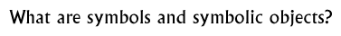

Discussion 10  |
|
Objectives: To define symbols and symbolic objects. To learn about the possible or intended meanings of a range of signs and symbols from the Indus Valley civilization.
Materials: Examples of symbols, photographs of symbolic objects, or elements of Indus script that could be interpreted as symbolic.
Class set-up: Whole group discussion or small groups brainstorming then sharing ideas.
Vocabulary: Symbol, symbolic
Discussion: Ask pupils to think about what symbols are, and share their comments. Create a class definition using the pupils'
comments.
Send children (homework activity?) off on a 'symbol safari', to find as many symbols as they can in as many contexts with as many uses as possible. Ask pupils to think about the message/s intended to be conveyed by the symbol. How is it being conveyed? What attributes or characteristics is it drawing upon? What are the benefits of succinctly conveying a message about an idea, a place or a relationship? Why are symbols important? How and where do symbols appear?Ask pupils to think about what a symbolic object is, and share their comments. Create a class definition using the pupils' comments. What is a symbolic object? Ask pupils to think about why symbolic objects are important. What is their purpose? Discuss what makes an object symbolic or not, and some examples of symbolic objects. Why are symbolic objects important?Ask pupils to think about how ideas and relationships are conveyed through symbols and symbolic objects. What can we tell about the Indus Valley people by looking at their symbols and symbolic objects?
Background information: Early HinduismTeachings of the Buddha The Buddha Seals Ashoka and the Mauryan Empire
© The British Museum |